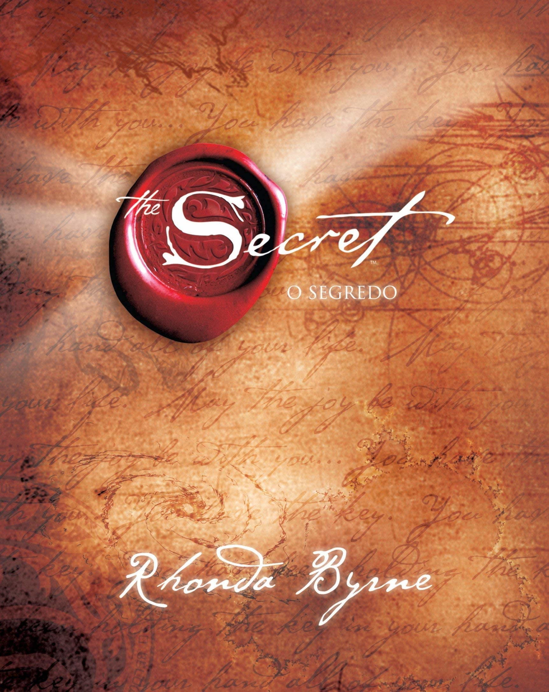

Harry Potter e a Ordem da Fênix

Sinopse
Você está compartilhando os pensamentos e emoções do Lorde das Trevas. O diretor acha que é desaconselhável que isto continue a acontecer. E quer que eu lhe ensine como fechar a mente ao Lorde das Trevas.'
Tempos sombrios se abateram sobre Hogwarts. Depois do ataque dos Dementadores ao seu primo Dudley, Harry Potter sabe que Voldemort fará tudo para encontrá-lo. Muitos negam o retorno do Lorde das Trevas, mas Harry não está sozinho: uma ordem secreta se reúne no Largo Grimmauld para fazer frente às forças sombrias. Harry precisa permitir que o professor Snape o ensine a se proteger dos vorazes ataques de Voldemort à sua mente. Mas eles estão ficando cada vez mais fortes, e o tempo de Harry está acabando...
Fonte Google Books
| Data |
Autor |
Idioma Original |
Gêneros |
Editora |
Quantidade de Páginas |
| 21 de Junho de 2003 |
J.K. Rowling |
Inglês |
Romance, Ficção juvenil, Literatura fantástica |
Rocco |
799 páginas |
"A ascensão do Governador - The Walking Dead - vol. 1

Sinopse
A franquia de zumbis mais celebrada da década acaba de conquistar um novo universo. Inspirado na série de quadrinhos best-seller do New York Times — publicada desde 2003 e vencedora do Eisner Award —, que originou o bem-sucedido seriado de TV homônimo, The walking dead: A ascensão do Governador, primeiro volume de uma trilogia, narra a origem de um mais perversos personagens da ficção. Criador dos quadrinhos e um dos produtores do seriado que já bateu diversos recordes de audiência nos Estados Unidos e foi finalista em várias categorias no 68o Golden Globe Awards, incluindo Melhor Série Dramática de TV, Robert Kirkman é co-autor deste romance com o veterano do gênero de horror Jay Bonansinga. O livro apresenta aos leitores um novo núcleo de personagens — já bastante conhecido dos fãs das HQs e que deve despontar em breve nas próximas temporadas da série, exibida no Brasil pela Fox.
Fonte Google Books, Google
| Data |
Autor |
Idioma Original |
Gêneros |
Editora |
Quantidade de Páginas |
| 11 de outubro de 2011 |
Robert Kirkman |
Inglês |
Romance, Terror, Ficção pós-apocalíptica |
St. Martin's Publishing Group |
336 páginas |
O segredo

Sinopse
Você tem em suas mãos um Grande Segredo...
Ao longo dos séculos, os fragmentos de um Grande Segredo estiveram presentes nas tradições orais, na literatura, nas religiões e nas correntes filosóficas da humanidade. Agora, pela primeira vez, todas as peças do Segredo foram reunidas em uma revelação extraordinária, capaz de transformar a vida de todos os que a vivenciarem.
Nesse livro, você aprenderá a utilizar O Segredo em todos os elementos da sua vida dinheiro, saúde, relacionamentos, felicidade e em cada uma de suas interações com o mundo. Começará a entender o poder oculto que existe dentro de você, e esta revelação trará alegria para cada aspecto da sua vida.
O Segredo contém a sabedoria de mestres da atualidade homens e mulheres que o utilizaram para alc...
Fonte Google Books, Google
| Data |
Autor |
Idioma Original |
Gêneros |
Editora |
Quantidade de Páginas |
| novembro de 2006 |
Rhonda Byrne |
Inglês |
Livro de autoajuda |
Sextante |
198 páginas |
Querido John
Sinopse
Quando o soldado John Tyree conhece Savannah Curtis, universitária idealista, um forte romance nasce entre eles. Durante sete anos de um tumultuado relacionamento, o casal se encontra apenas esporadicamente e mantém...
Fonte Google Books, Google
| Data |
Autor |
Idioma Original |
Gêneros |
Editora |
Quantidade de Páginas |
| 30 de outubro de 2006 |
Nicholas Sparks |
Inglês |
Romance, Romance de amor, Ficção |
Editora Novo Conceito |
288 páginas |
A menina que roubava livros

Sinopse
A trajetória de Liesel Meminger é contada por uma narradora mórbida, surpreendentemente simpática. Ao perceber que a pequena ladra de livros lhe escapa, a Morte afeiçoa-se à menina e rastreia suas pegadas de 1939 a 1943. Traços de uma sobrevivente: a mãe comunista, perseguida pelo nazismo, envia Liesel e o irmão para o subúrbio pobre de uma cidade alemã, onde um casal se dispõe a adotá-los por dinheiro. O garoto morre no trajeto e é enterrado por um coveiro que deixa cair um livro na neve. É o primeiro de uma série que a menina vai surrupiar ao longo dos anos. O único vínculo com a família é esta obra, que ela ainda não sabe ler. Assombrada por pesadelos, ela compensa o medo e a solidão das noites com a conivência do pai adotivo, um pintor de parede bonachão que lhe dá lições de leitura...
Fonte Google Books, Google
| Data |
Autor |
Idioma Original |
Gêneros |
Editora |
Quantidade de Páginas |
| 2005 |
Markus Zusak |
Alemão, Inglês |
Romance, Ficção juvenil, Ficção histórica, Bildungsroman |
Intrínseca |
480 páginas |
A revolução dos bichos

Sinopse
A Revolução dos Bicho sé uma das obras que há muito provou sua a temporalidade. Publicada pela primeira vez em 1945, a sátira de George Orwell sobre a Revolução Russa de 1917 e o consequente governo de Josef Stalin mostra a cruel reversão gradual da revolução dos animais em sua versão oposta, em uma narrativa ao mesmo tempo intrigante e provocativa.
Fonte Google Books, Google
| Data |
Autor |
Idioma Original |
Gêneros |
Editora |
Quantidade de Páginas |
| 17 de agosto de 1945 |
George Orwell |
Inglês |
Alegoria, Sátira, Fábula, Novela, Roman à clef, Ficção distópica, Sátira política |
Companhia das letras |
152 páginas |